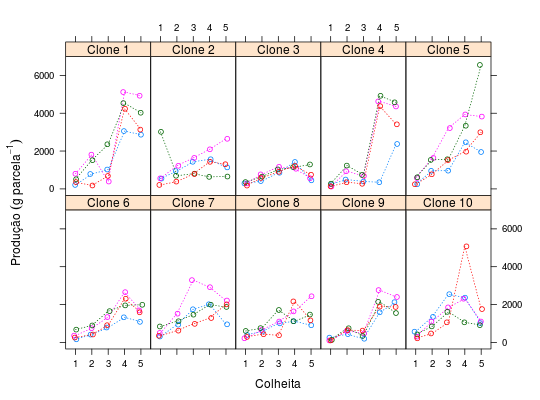

Experimento em delineamento de blocos casualizados para estudar a produção de amêndoas obtidos da avaliação de clones de caju, em 5 colheitas.
Um data.frame com 200 observações e 4 variáveis, em
que
clonecolhblocprodRAMALHO et al. (2005), Exercício 8.2, pág. 133.
library(latticeExtra) data(RamalhoEx8.2)#> Warning: data set ‘RamalhoEx8.2’ not foundstr(RamalhoEx8.2)#> 'data.frame': 200 obs. of 4 variables: #> $ clone: Factor w/ 10 levels "1","2","3","4",..: 1 1 1 1 1 1 1 1 1 1 ... #> $ colh : Ord.factor w/ 5 levels "1"<"2"<"3"<"4"<..: 1 2 3 4 5 1 2 3 4 5 ... #> $ bloc : Factor w/ 4 levels "1","2","3","4": 1 1 1 1 1 2 2 2 2 2 ... #> $ prod : int 211 789 1026 3058 2866 801 1812 391 5120 4926 ...xtabs(~clone + colh, data = RamalhoEx8.2)#> colh #> clone 1 2 3 4 5 #> 1 4 4 4 4 4 #> 2 4 4 4 4 4 #> 3 4 4 4 4 4 #> 4 4 4 4 4 4 #> 5 4 4 4 4 4 #> 6 4 4 4 4 4 #> 7 4 4 4 4 4 #> 8 4 4 4 4 4 #> 9 4 4 4 4 4 #> 10 4 4 4 4 4xyplot(prod ~ colh | clone, groups = bloc, type = "o", lty = 3, data = RamalhoEx8.2, jitter.x = TRUE, as.table = TRUE, layout = c(NA, 2), strip = strip.custom(strip.names = TRUE, var.name = "Clone", sep = " "), xlab = "Colheita", ylab = expression("Produção"~(g~parcela^{-1})))layer(panel.xyplot(x = x, groups = NULL, type = "a", lwd = 2, lty = 1, ...))#> Error in layer(panel.xyplot(x = x, groups = NULL, type = "a", lwd = 2, lty = 1, ...)): '...' used in an incorrect context